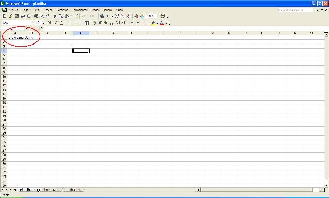

|
Como manipular arquivos Excel com Jakarta POI – Parte I
O Projeto POI é um aglomerado de APIs que tem como função manipular arquivos do tipo Microsoft OLE 2. Todo esse processo se dá na linguagem Java, o que facilita a nossa vida de mortais programadores. No entanto, vale lamentar que, atualmente, a API não está completa para todos os formatos. Somente a HSSF (formato Excel) disponibiliza grande parte dos comandos utilizados no Excel para a manipulação de planilhas. Para os outros programas, PowerPoint e Word, existem poucas opções de manipulação em termos de recurso. Falar do projeto POI-HSSF referente à leitura e escrita de arquivos Excel é o tema.
Configurando o ambiente
Utilizaremos o Eclipse como IDE:
www.eclipse.org
Download do Jakarta POI:
http://www.apache.org/dyn/closer.cgi/jakarta/poi/
Descompacte o arquivo poi-bin-3.0-alpha3-20061212.zip (versão com data deste artigo) e copie o arquivo poi-3.0-alpha3-20061212.jar para o classpath da sua aplicação. Pronto, o ambiente já está configurado para a criação da primeira planilha.
Da criação de uma planilha
Para gerar um arquivo de planilha Excel, utilizaremos a classe HSSFWorkbook. Observe o conjunto de códigos abaixo:
package glaucioguerra.info.main;
import java.io.FileOutputStream;
import java.io.IOException;
import org.apache.poi.hssf.usermodel.HSSFWorkbook;
public class Main {
public static void main(String[] args) throws IOException {
HSSFWorkbook wb = new HSSFWorkbook();
FileOutputStream stream = new FileOutputStream("c:/planilha.xls");
wb.write(stream);
}
}
A classe Workbook necessita de um FileOutputStream para armazenar a planilha em disco, que foi gerada no raiz c:\planilha.xls, conforme figura:
Adicionando planilhas ao Workbook
É possível adicionar planilhas ou Sheets em um Workbook. A classe que representa um sheet é a HSSFSheet. No exemplo será adiciona à planilha três sheets.
package glaucioguerra.info.main;
import java.io.FileOutputStream;
import java.io.IOException;
import org.apache.poi.hssf.usermodel.HSSFSheet;
import org.apache.poi.hssf.usermodel.HSSFWorkbook;
public class Main {
public static void main(String[] args) throws IOException {
HSSFWorkbook wb = new HSSFWorkbook();
HSSFSheet sheet1 = wb.createSheet("Planilha Um");
HSSFSheet sheet2 = wb.createSheet("Planilha Dois");
HSSFSheet sheet3 = wb.createSheet("Planilha Três");
FileOutputStream stream = new FileOutputStream("c:/planilha.xls");
wb.write(stream);
}
}
O método createSheet recebe como parâmetro uma String para identificar o nome da planilha adicionada ao Workbook. O retorno desta função é do tipo HSSFSheet, que será utilizado para manipular as células pertencentes à planilha. A relação entre essas classes seria da seguinte forma:
A figura ilustra o resultado do código acima, ao qual foram adicionados os Sheets Planilha Um, Planilha Dois e Planilha Três.
Adicionando conteúdo nas células
Para adicionar um conteúdo em uma célula é necessário instanciar uma classe do tipo HSSFRow, na qual serão adicionadas as células que são representadas pela classe HSSFCell.
Segue o exemplo:
package glaucioguerra.info.main;
import java.io.FileOutputStream;
import java.io.IOException;
import org.apache.poi.hssf.usermodel.HSSFRow;
import org.apache.poi.hssf.usermodel.HSSFSheet;
import org.apache.poi.hssf.usermodel.HSSFWorkbook;
public class Main {
public static void main(String[] args) throws IOException {
HSSFWorkbook wb = new HSSFWorkbook();
HSSFSheet sheet1 = wb.createSheet("Planilha Um");
HSSFSheet sheet2 = wb.createSheet("Planilha Dois");
HSSFSheet sheet3 = wb.createSheet("Planilha Três");
HSSFRow row = sheet1.createRow(0);
row.createCell((short) 0).setCellValue("Isto é uma String");
FileOutputStream stream = new FileOutputStream("c:/planilha.xls");
wb.write(stream);
}
}
O método createCell adiciona células à linha da planilha. Toda a instância da classe HSSFRow deve receber um inteiro como parâmetro na criação do objeto, que representa a posição da linha na planilha. A seqüência começa em zero conforme utilizada no exemplo.
Resultado

Na segunda parte deste tema será feito um panorama da criação de células do tipo data e suas formatações: cores, alinhamento e mesclagem de células. Acompanhe a seqüência dos próximos artigos, pois temos muito a falar nos mais diversos desdobramentos desse assunto.
Até breve!
|


 Conheça os planos de créditos DevMedia e visualize esse post agora mesmo!
Conheça os planos de créditos DevMedia e visualize esse post agora mesmo!


 0
0